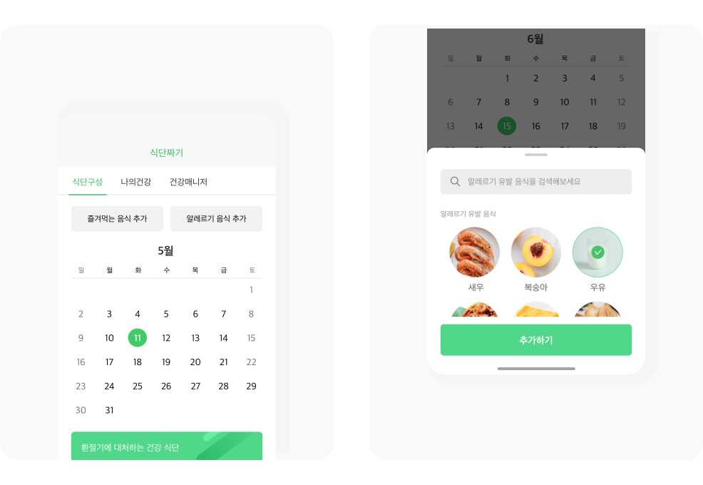

Timeline
2021.04Scope
Desk research, User interviews, User journey map, Affinity diagramMy Role
100% personal project UX design : Desk research, User research, information architecture, User flow, UI design : interface design, iconography, illustration Tool : Adobe XD, photoshop, illustrator, aftereffectProblem
- 암환자, 완치자, 보호자도 식사를 챙기기 어렵다. - 어떤걸 먹어야 하고, 어떤걸 먹지 말아야 할지 모른다. - 암에 관한 정확한 정보가 없어 불안감을 키운다.
Solution
- 사용자에 맞춘 식단을 AI가 구성하고 식단 그대로 재료들을 주문 - 식단 구성시 인공지능이 영양소 균형을 맞추어 준다. - 커뮤니티를 제공하여 치료후기, 완치후기를 통해 정보를 공유할 수 있다.
1. Research
암질환 35~80%가 음식 관련, 완치후에도 식단관리 중요

2. User voice
사용자 인터뷰는 총 3명을 인터뷰 했습니다. 자녀가 있는 직장인 2명과 고등학교 2학년 학생을 인터뷰했습니다.

3. Painpoint & Solution

4. information architecture

5. Solution

엄선된 건강한 음식만을 제공합니다
건강한 유기농 식자재 만을 제공하여 걱정없이 구입할 수 있게 하였으며 건강한 조리법도 함께 제공합니다.

건강한 조리법 제공과 조리법 그대로 재료 구매
평소 잘 몰랐던 건강한 조리법을 영상으로 제공, 조리법 그대로 제품을 구매할 수 있어 재료준비와 음식 조리에 고민을 덜어줍니다.
8. Solution
위로와 응원이 되어주는 커뮤니티
정보 부족과 우울감 을 해결 하기 위해 영양소 별 식단을 구성하고 식단 그대로 식재료와 밀키트를 주문할 수 있어 식사의 부담을 줄입니다.
7. Solution
나를 잘 알아주는 식단 서비스
즐겨먹는 음식과 알레르기 음식을 추가하여 나에게 꼭 맞는 식단을 구성할 수 있습니다.

8. Solution
매일 건강한 식단 구성
정보 부족과 우울감을 해결 하기 위해 영양소 별 식단을 구성하고 식단 그대로 식재료와 밀키트를 주문할 수 있어 식사의 부담을 줄입니다.